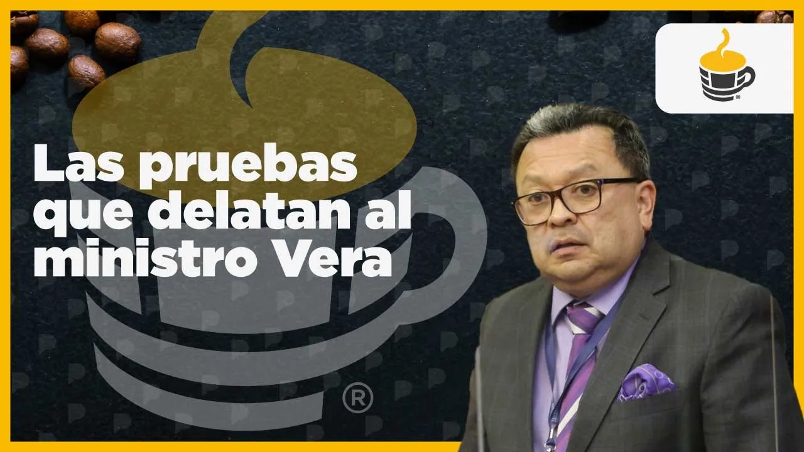
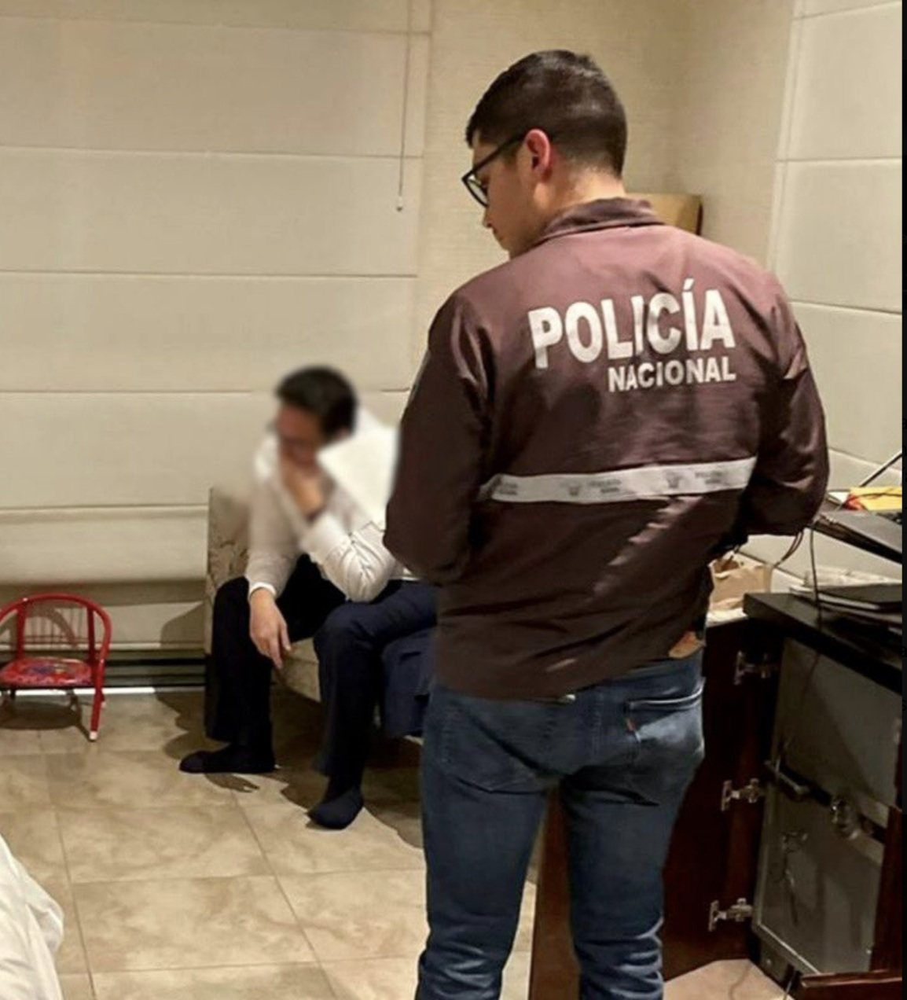
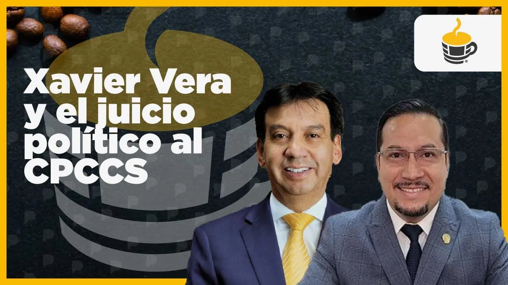
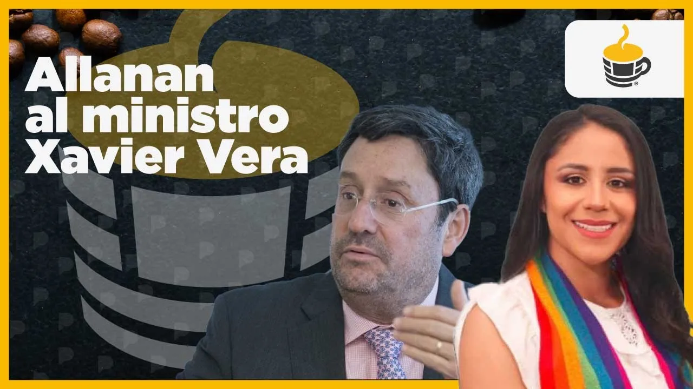

Oct 24, 2022 · Is minister Xavier Vera corrupt?
Xavier Vera Grunauer lasted six months as Guillermo Lasso's energy minister. In October 2022 La Posta published a disability discount on his electricity bills, a threatening message demanding he honor a 150,000 dollar commitment, audio of the Petroecuador manager saying the minister sold jobs, and the voice of a man who says he handed him that money personally in exchange for a regional coordinator post. Four days later the Attorney General's Office raided his home. On the fifth, he resigned.


Xavier Vera Grunauer, an engineer from Guayaquil, arrived at the Ministry of Energy and Mines on April 28, 2022. He had been deputy minister and, according to La Posta's reconstruction, switched sides within the government to the circle of Fabián Pozo and Marcos Miranda, the presidency boys, who also managed to install Hugo Aguiar as Petroecuador's manager when Ítalo Cedeño, the man of Danilo Carrera and Rubén Cherres, left. Fernando Villavicencio, from the Oversight Committee, had already flagged him for a conflict of interest: his family firm, Consultora Vera y Asociados, had overseen the Coca Codo Sinclair hydroelectric plant. Vera said he left the firm on May 11, 2011, a month before the contract.
The case began with a message. Someone had sent it to the minister's phone and it reached the newsroom: Xavier Vera, I'm still waiting for you to honor the commitment. You pushed out our man, you made fools of us even after we paid you more than 150 thousand dollars and you carry on like nothing happened. Remember that debts get paid and you have a beautiful daughter. A threatened minister is a victim; the question was why they were trying to collect from him. On Thursday the 20th and Friday the 21st of October, La Posta published the first piece: bills from the state utility Cnel showing a disability discount on the minister's electricity account, though he denied holding a disability card.
You made fools of us even after we paid you more than 150 thousand dollars and you carry on like nothing happened. Remember that debts get paid and you have a beautiful daughter.
Message sent to the minister's phone, shown by La Posta on October 24, 2022

Three things converged in one week. On Wednesday, in the Danubio case, Doménica Vivanco had shown that Juan José Pons said they needed to meet with Vera to collect "those fifteen." The Petroecuador manager named him. And then the message. Over the weekend Boscán and Mónica Velásquez met with almost the minister's entire circle. His own people gave him up.
On Monday, October 24, 2022, Café La Posta devoted the whole show to Vera. First, an audio recording: someone close to the minister calls a journalist in the newsroom to reach a deal and stop Monday's story; the minister, sources said, was willing to pay 150,000 dollars for silence. Second, the circle: the wife they call "the minister," Alan Velasco "the butcher," Armando Robalino "el Chavo," Luis Sarmiento "the bloodhound." Third, a confidential document from the minister's team about a 150 million dollar Petroecuador tender split into four clusters, with notes on which Chinese company wanted which and which did not; and the switch of a shipment of mining material seized in Ibarra for gravel.
The minister's wife. According to his circle, she had great influence over him
Organized the arrangements. Replaced Santiago Anda as adviser. Died in May 2026
Carried out what Velasco organized: acted on the minister's behalf
The circle's lawyer
Part of the inner circle
Adviser to the minister despite his ties to fuel importers
Fourth, the voice of Ítalo Cedeño, until recently Petroecuador's manager with ministerial rank: he asked me for two or three posts for people who were offering me money, millions of dollars for a post; if someone pays to get in, how much will they want to steal? Cedeño later said he had not said that; La Posta played it. And fifth, the central audio: Fabián Zamora, a lawyer, says by first and last name that he handed Xavier Vera more than 150,000 dollars personally for the Imbabura regional coordinator post at the Energy Regulation and Control Agency, which was later swapped for the Azuay post, and that in the end Alan Velasco sat down and everything changed.

On Tuesday the 25th Vera appeared before the National Assembly's Transparency Committee, chaired by Ferdinan Álvarez. He denied asking for money, said he had warned Cedeño about suspicious offers and that the audios were orchestrated by mafias. On Thursday, October 27, the Attorney General's Office raided his home in Guayaquil, his apartment in Cumbayá and his office at the ministry, and seized cellphones, a laptop, a tablet and documents. On Friday the 28th he resigned to defend himself against what he called slander. Lasso accepted. He was the first former minister of that government with the justice system on his heels.

The preliminary bribery investigation took seven months. On May 15, 2023, Vera was detained at the La Merced prosecutor's office in Guayaquil to ensure he appeared for the filing of charges, and was transferred to Quito; the formal investigation began on May 16 under Attorney General Diana Salazar. On January 10, 2024, he was sent to trial along with Adrián Zamora, Armando Robalino and Alan Velasco, accused as perpetrators and accomplices: the Attorney General's Office argued that Zamora paid 150,000 dollars for the post of regional coordinator at the energy agency. The hearing was postponed three times. Prosecutors sought seven years.
The National Assembly reacted the day after publication. Fernando Villavicencio, chair of the Oversight Committee, announced alongside assembly members Ricardo Vanegas and Sofía Sánchez that an impeachment request against the minister was being drafted. Vera resigned before it could move forward.
The trial opened in 2026 before judges Manuel Cabrera, Daniella Camacho and Hernán Barros of the National Court of Justice. They deliberated from April 21. On June 25, 2026, they found Vera, Zamora and Robalino not guilty: the substance of the crime was not established because the delivery of the 150,000 dollars was not proven beyond a reasonable doubt. The case against Velasco was extinguished by his death in May. The court acknowledged irregularities, audios about the handling of posts and inconsistencies in his assets, and ordered copies sent to the Attorney General's Office to assess other crimes. Expreso reported on June 27 that the court had upheld the acquittal.
The case left a lesson about evidence: the audio of a man who says he paid is not enough if the money never turns up. And another about the ministry: in less than a year, two former energy ministers were criminally investigated and a third faced an impeachment trial. Vera Grunauer returned to the private sector.
Updated September 5, 2026
Vera takes over Energy and Mines.
The threat over the 150,000 dollars reaches La Posta.
The disability discount on the electricity account.
The attempted buyoff, the circle, Cedeño and the Zamora audio.
He appears before the Transparency Committee.
Guayaquil, Cumbayá and the ministry.
Lasso accepts it.
For the filing of bribery charges.
With Zamora, Robalino and Velasco.
The Attorney General's Office seeks seven years.
The delivery of the money was not proven.
Minister of Energy and Mines, April to October 2022.
Lawyer. In his audio he says he handed the minister more than 150,000 dollars.
An operator in the circle, according to La Posta.
Adviser and organizer of the arrangements.
Petroecuador manager. In his audio he says Vera asked for posts.
Legal secretary of the presidency. Head of the presidency boys.
He denied asking for money, said he had warned Cedeño about suspicious offers, called the audios orchestrated by mafias and the raids a media show, and resigned to defend himself against slander.
He maintained that he did not say what is heard in the audio.
The existence of the bribe was not established. The court acknowledged irregularities and ordered copies sent to the Attorney General's Office over other possible crimes.


violent deaths it's one of the most violent weekends on record in the province of guayas alone almost 30 murders in one weekend 30 murders the barbaric the energy minister Javier Vera is in trouble then in the publication of some audios and some documents here on la posta the minister has been called to the assembly that call I also for that reason wouldn't be on the sh…
Read the full transcriptnational Good day la posta says Henry García Greetings from the páramo of imbabura Greetings dear Henry yesterday I appeared before the national assembly the hearing that was broadcast here live for the la posta audience which basically gathered what we've been telling over these days and which added some documents that hadn't been able to be made public until now among them an inv…
Read the full transcriptyesterday raided the Prime Minister of Guillermo The Prime Minister of Guillermo Lázaro So we're going to talk more about the issue of mister Javier Vera agronauer but we welcome you today Anderson boscán isn't here Today it's the guy from apartment 52 welcome How are you welcome I'm the guy from apartment 512 it's a pleasure to be with you you can reach me as chicos departamento 512 at chicos el departa…
Read the full transcriptnational today we're going to be talking about several topics no doubt the most relevant what happened on Friday in the afternoon right when We closed the show here but no doubt we have to talk about it Well we took on this investigation we published the audios that happened around Mister Javier Vera former energy minister after people close to him approached to try to bribe us to te…
Read the full transcriptTranscripts from each show's automatic captions. They have not been corrected by hand: use them to find a phrase and jump to the exact minute in the video, not as verbatim quotes.
From the show to the resignation.
Acquitted. The court asked for the rest to be investigated.
After the acquittal, the court ordered other crimes to be investigated based on the audios and the published information.
The audios cited were played by La Posta on October 24, 2022. The court that acquitted the defendants in 2026 did not find the delivery of the money proven. The videos are the original shows, hosted on this site.